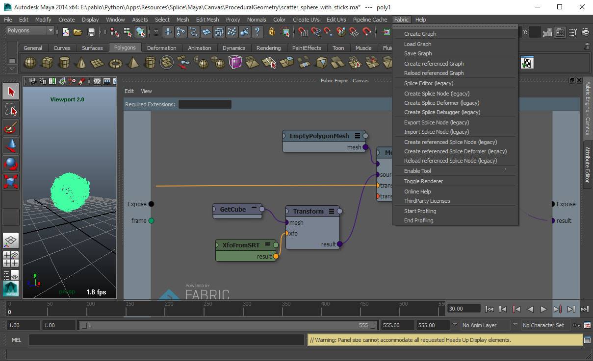
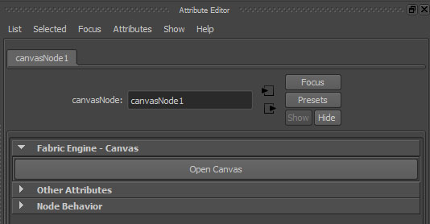
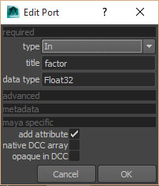
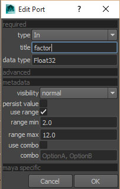

Canvas inside of Maya¶
The CanvasNode¶
Canvas is integrated inside of maya as a maya hypergraph node. You can instantiate the canvasNode in the node editor hitting TAB and typing canvas or through the Fabric top level menu and choosing Create graph. You can then open up the Canvas user interface through the Open Canvas button on the Maya Attribute editor.
Adding ports / attributes¶
The CanvasNode inside of Maya doesn’t come with any attributes by default. It’s so to say a generic node for any purpose. After opening up the Canvas user interface you can expose ports the normal way. Doing that will also add matching attributes to the Maya node, which allow you to connect data between the two worlds. The supported data types are;
- Boolean
- Integer / SInt32 / UInt32
- Scalar / Float32 / Float64
- String
- Vec3
- Euler
- Color
- Mat44
- Lines
- PolygonMesh
When using the dialog to create a port there are a couple of extra features within Maya.
Native vs. multi arrays¶
Maya supports two types of arrays
- Native: Maya has a way of representing a IntArray, DoubleArray or VectorArray as a single attribute. This is very efficient for large arrays and is much faster than using multi arrays.
- Multi: Each element of the array has its own single plug, you can connect them to different things in the hyper graph and you can build up arrays interactively. This is very flexible, but much slower than native arrays.
Within Canvas you can choose which type of array you want - depending on your needs.
注釈
Native arrays are only support for these types: Scalar[], Float32[], Integer[], SInt32[], Vec3[].
Opaque data¶
By checking the opaque in DCC checkbox causes Maya to use a special data type for the Maya attribute instead of reflecting it as a native type. These attributes can be connected between each other (from one Maya node to the next) without Maya interpreting the data. This is very useful when passing heavy data around which you don’t need access to outside of Canvas, but you still want to pass it between Maya nodes. This is also very useful for passing data between Canvas Maya nodes which Maya is not able to reflect at all (for example a custom KL datastructure).
Port metadata¶
To drive some of the user interface features you can set metadata on the port. This will be picked up by Maya when creating attribute. Open the meta data section of the dialog when creating a port. Right now Maya supports only the range settings.
Loading / saving of Canvas graphs¶
You can save out Canvas graphs from Maya to disk and also load them back. To do this select the Canvas Maya node of choice and pick Load graph or Save graph.
注釈
You can only load graphs into a Canvas Maya node which is empty.
Realtime Rendering¶
You can draw into Maya’s viewport directly from Canvas. For this you can use the EmptyDrawingHandle node and consecutive nodes such as DrawingHandle.DrawPolygonMesh. Please see the InlineDrawing Canvas sample scenes for examples of this.
注釈
You need to provide a proper name (for the name port) for each of the drawing nodes when using multiple nodes consecutively.
Keyboard shortcuts¶
Canvas for Maya implements all standard キーボードショートカット.